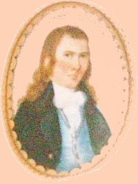

Elisha Dorr
Elisha Dorr was born in March 1764. He was the sixth son of Matthew and Elizabeth Palmer Dorr of Lyme, Connecticut. His mother died in 1775. His father re-married and raised a large, combined family. A Matthew Dorr died in Athens, Ohio in 1801.
Elisha is said to have served in the War for Independence as a soldier in the Revolutionary army on Long Island.
Afterwards, he is thought to have been associated with John Jacob Astor and to have come to Albany to deal in furs and skins. However, such claims are still unsubstantiated.
His wife was the somewhat older Dutchess County native Elizabeth Brouwer. Between 1797 and 1810, the marriage produced six children. While his wife first was a Lutheran, he was a member, deacon, and elder of the First Presbyterian church.
In January 1793, he advertized his hat manufactory on Maiden Lane - a few doors west of the Market House. He offered a range of hats as well as 200 barrels of "the best cyder for sale cheap."
In 1798, his name appeared on an Albany jury list. At that time, he was identified as a hatter. Perhaps he was among the founders of the Albany Mechanics Society. He served as a trustee for a number of years.
In 1799, his modest holdings on Lodge Street were valued on the city assessment rolls. Beginning in 1800, his household was configured on the census for the second ward.
By the time of the first city directory in 1813, he had re-located his hattery to South Market Street and his residence to Division Street.
From 1808 to 1810, he served as surrogate of Albany County.
Mostly after 1800, he was a trustee and director of a number of Albany-based civic and corporate entities.
Later, he became a noted horticulturalist - in particular developing new varieties of plums.
Over the years, he lived in a number of residences - mostly along North and South Market Streets.
Elizabeth died in September 1837. Elisha Dorr died in April 1843 at the age of eighty. He had lived in Albany for sixty years. His will passed probate on June 8.
Poorly executed copy of a miniature by Ezra Ames is said to have been done about 1793 and taken from a recent publication, p.148.